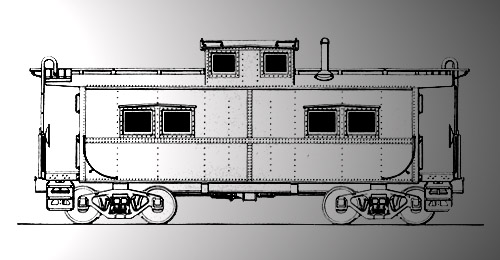

| Perris CA | LV (wood) | as PE 1973, wood, cupola, built in 1926; from Lehigh Valley, Orange Empire Railway Museum |
| Greenwood ME | LV (wood) | wood, cupola, Littlefield Beaches Campground, 13 Litchfield Lane, 875-3290, from So. Paris, ME |
| Wheelerville PA | LV (wood) | no cupola, blt.'14, Hunting Cabin, Gamelands Road, off Rt 154, Sullivan County, FOR SALE |
| Bath NY | LV (wood) 96409? | no markings, wood, cupola, side door, Rt 415, Lake Salubria, 1 mile east of town, with coach |
| Kempton PA | LV (wood) 97566 | wood caboose,
sold at auction October 2009, was at Kempton,
PA, moved to |
| Strasburg PA | LV (wood) 2606 | wood, cupola, 4 wheel, Railroad Museum of Pennsylvania, 717-687-8628, from Lock Haven, PA |
| Wysox PA | LV (wood) 95271 | wood, no cupola, no trucks, Rt 6 |
| Winslow NJ | LV 95002 | as Southern Railroad of New Jersey 95002, ex-CR 18645, steel, cupola, J. Petaccio, owner |
| Scranton PA | LV 95003 | no markings, ex-CR 18644, steel cupola, Steamtown National Historical Site |
| Lee, MA |
LV 95004 | ex-CR 18679, at Sullivan
Station Restaurant, Lee Massachusetts. |
| Titusville PA | LV 95009 | as OVHX
1013, ex-CR 18661, N5G, Casey's Caboose Motel, near
OC&T Depot was thought to possibly be 95069 |
| Sayre PA | LV 95011 | ex-CR 18698, steel, cupola, Municipal Parking Lot |
| Titusville PA | LV 95016 | as OVHX 1011, ex-CR 18629, N5G, Casey's Caboose Motel, near Oil Creek & Titusville Depot |
| North Creek NY | LV 95018 | as General Electric GEX 80004, built 6/42, Upper Hudson River Railroad |
| Newark Valley NY | LV 95019 | steel, cupola, Depot, Newark Valley Historical Society |
| Jim Thorpe? PA | LV 95023 | CR 18680, steel, cupola, Bedner Family, owners, GONE TO Temple, PA? |
| Canterbury CT | LV 95025 | as P&W 3001, Playhouse, Yarowski Trucking |
| Norwalk OH | LV 95026 |
ex-CR 18628, steel, cupola, Fritz Kuenzel, 2578 Zenobia Road, from Wellington, OH |
| Winslow NJ | LV 95032 | as CR 18696, Southern Railroad of New Jersey Yard, Rich Jahn, owner |
| Jamesville NY | LV 95033 | no markings, steel, cupola, Alpha Cement Plant, Central NY Chapter, NRHS, from Syracuse, NY |
| Port Clinton PA | LV 95036 | as Reading, ex-CR 18621, steel, cupola, Class N5G, Union House B&B, Rt 61, 610-562-4076 |
| Victor, NY |
LV 95037 | as CR
18631, steel, cupola, was in Renovo, PA, Moved to
Victor, NY Dec 2009. |
| North Kingstown RI | LV 95038 | as LV 5038, x-CR 18624, steel, cupola, Wickford Jct. Plaza, 294-0020, x-Seaview RR, N. Kingstown |
| Catawissa PA | LV 95039 | ex-CR 18647, steel, cupola, Class N5G, Catawissa Station, Walter Gosciminski, from Renovo, PA |
| Mt. Pleasant NY | LV 95042 | ex-CR 18617, steel, cupola, built 1937, Catskill Mountain Railroad, Rt 28, 914-688-7400 |
| Prineville OR | LV 95043 | as City of Prineville 201, steel, cupola, City of Prineville Yard |
| Catawissa PA | LV 95046 | as CR 18655, steel, cupola, Class N5G, Catawissa Station, Walter Gosciminski |
| Canastota NY | LV 95047 | bought at
an auction in Albrightsville, PA in April 2004,
located along former LV Canastota yard,
moved there in 2004, currently no markings. |
| Hamburg NY | LV 95050 | as CR 18671, steel, built 1937, Western New York Railway Hist. Soc., Union & Scott Sts. |
| Titusville PA | LV 95058 | as OVHX 1017, ex-CR 18630, N5G, Casey's Caboose Motel, near Oil Creek & Titusville Depot |
| Milan PA | LV 95065 | ex-CR 18642, steel, cupola, built 1937, Lehigh Valley Station |
| Catawissa PA | LV 95067 | as CR 18627, steel, cupola, Class N5G, Catawissa Station, Walter Gosciminski |
| Bath PA | LV 95068 | CR 18615, Bath Iron Works, Rt 512 |
| Winslow NJ | LV 95070 | as CR 18683, built 6/39, Amsterdam Leasing, Southern Railroad of New Jersey Yard |
| Titusville PA | LV 95073 | as OVHX 1018, ex-CR 18677, N5G, Casey's Caboose Motel, near Oil Creek & Titusville Depot |
| Brooktondale NY | LV 95074 | as CR 18695, Class N5G, cupola, White Church Road |
| Lewisburg PA | LV 95076 | was CR 18654, Penitentiary Branch Line in
Lewisburg. privately owned. (updated 2016) |
| Crestline OH | LV 95079 | ex-CR 18641, steel, cupola, 1869 McNeil at Rt 61, south side of town |
| Harmon, NY | LV 95082 |
In use as Metro North Commuter railroad 402 |
| Greenwood, ME |
LV 95085 | The LV
Bicentennial Caboose! No. 1776, For
sale in Maine, in 2012. |
| Stewartstown PA | LV 95087 | Was previously
at Reading PA: CR 18693, steel, cupola, Paul Troutman,
Berkley Rd., near 84 Lumber, 926-1138, ex-Topton/PA. Update! December 2017: Now at Stewartstown Railroad, in Stewartstown, PA, Owned by Mike Ruane. |
| Cedarville OH | LV 95088 | as CR 18649, Class N5G, 21 Miller Street. |
| Milan PA | LV 95096 | ex-CR 18681, steel, cupola, Lehigh Valley Station |
| Avis PA | LV 95097 | as CR 18690, Lycoming Valley RR Yard, 570-327-0711, from Renovo, PA, FOR SALE? |
| West Portal NJ | LV 95099 | ex-CR 18669, steel, cupola, Bill Savaki, owner, near Spain Inn Restaurant, 1043 Hwy 173 |
| Dryden NY | LV 95105 | no markings, ex-D&H 35801, steel, cupola, Hiking Trail, Rt 13, n. side of town, x-D&H, Oneonta/NY |
| Rush, NY |
LV 95100 | to CR 18632,
steel, cupola, blt. 2/41, Class N5G, was at Lycoming
Valley Yard, moved to Manchester, NY in 2005. Moved to the R&GVRRM in 2012. |
| Ringoes NJ | LV 95106 | ex-CR 18687, built Sayre, PA, 1945, Black River & Western Railroad, CR 579 |
| Sunderland VT | LV 95109 | as D&H 35802, steel, cupola, built 1945, D. J. Cully, Rt 7A, DJCully@vermontel.com |
| Stearns KY | LV 95110 | as Big South Fork Scenic Railway CAB 1, ex-CRI&P 17600, steel, cupola, built 1945, 800-462-5664 |
| Turner Falls? OK | LV 95111 | as CRI&P 17601, steel, cupola, built 9/45, Deer Creek area?, Hwy 77?, north of town?, CAN'T FIND |
| Groton NY | LV 95113 | Ice Cream Stand, from "Sayre Hobby Shop" on Keystone ave, Sayre, PA |
| Stony Ridge OH | LV 95114 | as fake NYC 45040, x-DTSL 127/TT 90/C&O 903326, steel/cupola, Dave Schober/5110 LibbeyRd. |
| Leesport PA | LV 95116 | as P&S 196, Reading Technical & Historical Society, from David R. Gamble, Cressona, PA |
| Mahoningtown, PA | LV 95117 |
(ex-LEF&C 11) is in Downingtown Park, Rt. 18. |
| Middletown PA | LV 95123 | M&H RR, ex-CR 18626, Clayton DE, to Gettysburg PA, to Middletown PA. |
| Titusville PA | LV 95124 | as OVHX 1012, ex-PC 18404/CR 18610, N5G, Casey's Caboose Stop Motel, near OC&T Depot |
| Perkaise PA | LV 95127 | as CR 18602, ex-PC 18405, steel, cupola, built 4/46, was at Lycoming Valley RR Yard, was FOR SALE - now in Perkaise, PA. 1244 Broad St |
| Cazenovia NY | LV 95128 | no markings, steel, cupola, Depot Photographer's Shop, William St. |
| Bedford IA | LV 95132 | as RI 17604, steel, cupola, built 5/46, Taylor County Historical Museum, Hwy 2, 712-523-2041 |
| Tunkhannock PA | LV 95133 | as CR 18672, ex-PC 18422, Class N5G, built 1940, Riverside Park |
| Urbana? IA | LV 95135 | as RI 17605, steel, cupola, built 5/46, Trax Diner, near I-380, GONE TO? |
| Brookville? PA | LV 95136 | as P&S 197, Pittsburg & Shawmut Railroad, 412-543-2121, GOING TO? |
| Pharsalia NY | LV 95137? | as CR 18652?, LOCATION? |
| Chicago, IL | LV
95138 |
In service as CNW 261531 (UP) the only LV caboose still in Class-1 service. |
| Axemann PA | LV 95139 | as P&S 195, steel, cupola, x-Brookville & Dale Summit/PA |
| Las Vegas NV | as The Summit, steel, cupola, 6990 West Rome Boulevard & North Rio Vista Street | |
| Canton OH | CB shop,
Was at Gullivers truck stop, I-77, exit 101, until 2013. came from
Barberton, OH, Current location unknown! see note below. |
|
| Greenville? PA | LV 95??? | ex-Franklin & Clarion?, Waters Red Caboose Depot, 41 Clinton Street, GONE TO? |
| Sarver PA | LV 95??? | at Cooper Station Restaurant, steel, |
| Lake Geneva WI | LV 95??? | 5 cabooses, End of the Line Vacation Station, 301 East Town Line Road, 800-747-RAIL |
| Winifrede? WV | LV 95??? | as Winifrede 3, steel, cupola, Enginehouse, where did ex-C&O wood caboose go to? |
| Cedar Rapids IA | LV 95??? | Cedar Rapids and Iowa City Railway
(CRANDIC) No. 725, Cedar Rapids, Iowa. LV #
currently unknown. |
these cabs are probably still around somewhere,
but they havent been tracked down yet..
can you help find them??
LV
95131 was Genesee & Wyoming #11, the "Stub
Ellis".
Taken
at Retsof, NY, on 8-21-77. survivor status currently
unknown.
{kind=link}
95118
and
95134
at a Restaurant East Satauket NY??
can
anyone confirm?
LV
95086 might still be Metro North #065 or #405.
can
anyone confirm?
was
still in Harmon in 1996.

LV
95085 - CR 18666
still
existed
in
1996!
in
Conway, PA
http://www.hebners.net/CR/crN5G.html
Mystery Cabooses..known surviving, but LV
number unknown.
Las
Vegas, Nevada mystery caboose.
LV
number unknown.
as The Summit, steel, cupola, 6990 West Rome
Boulevard & North Rio Vista Street

Canton,
Ohio
mystery caboose.
was
an ice cream shop, is now a CB shop.
need
to determine the LV number.
"I think we can now narrow the Canton, Ohio
caboose down to one of 6 cabs now.
The 95059 according to your builder data info
shows the 95059 as having the fabricated
steel steps like on mine.The Canton caboose
had the remains of the cast iron style steps
even though the bottoms are all partially
torched off. That would then narrow it down
as to being one of these 6 cabs.
The 95004, 95007, 95056, 95075, 95084, 95092."
-Fritz Kuenzel

Update
on
the Canton, Ohio caboose:
"When
I checked out Gulliver's truck stop, Canton, OH,
to look for the LV hack I found the entire truck
stop in a pile of rubble.
They tore it down and there was no sign of the caboose."
Bob McGilvray Jr., 24th March, 2013
Perris CA - LV (wood) - as PE 1973, wood, cupola, built in 1926; from Lehigh Valley, Orange Empire Railway Museum
Greenwood ME - LV (wood) - wood, cupola, Littlefield Beaches Campground, 13 Litchfield Lane, 875-3290, from So. Paris, ME
Wheelerville PA - LV (wood) - no cupola, blt.'14, Hunting Cabin, Gamelands Road, off Rt 154, Sullivan County, FOR SALE
Bath NY - LV (wood) - no markings, wood, cupola, side door, Rt 415, Lake Salubria, 1 mile east of town, with coach
Greenville? PA -(steel)- ex-Franklin & Clarion?, Waters Red Caboose Depot, 41 Clinton Street, GONE TO?
Middletown PA -(steel)- Middletown & Hummelstown Railroad, from Gettysburg, PA
Sarver PA -(steel)- at Cooper Station Restaurant
Lake Geneva WI -(steel)- 5 cabooses, End of the Line Vacation Station, 301 East Town Line Road, 800-747-RAIL
Winifrede? WV -(steel)- as Winifrede 3,
steel, cupola, Enginehouse, where did ex-C&O wood
caboose go to?
see this thread for more discussion on the mystery LV cabooses.
The
LV built 140 of the "North East Style" steel cabooses
in
the Sayre shops between 1937 and 1946.
numbers 95001 - 95140
They
were
*not*
built in numerical order!
the
first batch, in 1927, were numbers 95050 - 95069.
so
really, LV caboose 95050 can be considered the "first
built"..
not
number 95001, which was built 4 years later, and was
really the 104th caboose built!
They
were
based
on the original Reading Railroad design.
the
most obvious spotting feature that differentates the LV
cars
from
the North East style cabooses of the Reading and other
railroads
is
the distinctive "drip strip" over the windows on the LV
cabooses.
Builder Data info, from Railroad Model Craftsman, August 1982.
Individual Data: Lehigh Valley Cabooses
Phase
I
Built
Lot
1
95050-95069
7/28/37-12/24/37
Lot
2
95070-95079
6/10/39-7/8/39
Lot
3
95080-95103
4/30/40-3/31/41
Lot
4
95001-95014
5/10/41-8/23/41
Lot
5
95015-95026
5/28/42-8/18/42
Lot
6
95027-95041
4/24/44-
95
Cars: Cushion underframe, right end window, flush roof/end
walks, cast steps.
exceptions:
Fabrcated
steps:
95014, 95017, 95019, 95022-95026, 95059
Added
Left end window: 95004, 95007, 95036, 95037, 95038, 95050,
95055,
95056,
95059,
95064, 95065, 95073, 95075, 95077, 95084, 95090, 95092
Solid
underframe: 95051
Phase
II
Lot
6
95042-95049
-6/30/45
Lot
7
95104-95125
7/24/45-11/31/45
Lot
8
95126-95140
3/29/46-5/31/46
45 Cars: Solid underframe, dual porthole windows, raised roof/end walks, cast steps.

Original
list
compiled by Roger Kirkpatrick .
additional
research
by Scot Lawrence and the online railfan community.
73 LV cabooses found so far!
7
LV wood cabooses.
and
67 steel "Sayre built, NorthEast style" cabooses found.
(out
of 140 built)
please
send
any
updates, corrections, new finds! to:
sscotsman@yahoo.com
thanks!